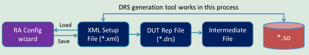

DRS generation tool
When you use the RA Configuration wizard to generate configuration files, a backend tool generates DUT representation file (.drs) and a target shared library (.so) based on DUT representation XML file. This tool is DRS generation tool. The following diagram illustrates when the DRS generation tool works in the entire process of .drs and .so generation based on DUT representation file (.xml).

You can use this tool to output .drs and .so files via the command line.
You can find this tool here: /opt/93000mts/mts/rr/lbin/ra_configure/raConfigureTool.
Command |
Description |
|---|---|
--version |
Show the program version number and exit. |
-h, --help |
Show help messages and exit. |
-f FILE, --file=FILE |
Specify an input file name. |
-v, --verbose |
Print the verbose information. |
-t, --template |
Specify an output template file. If not, the default template will be selected. |
-k, --keep |
Keep an intermediate .cpp source file. |
-d DEVICE, --device=DEVICE |
Specify a device directory. |
-s SEMANTIC_OPT, -semantic=EMANTIC_OPT |
Semantic check option: --semantic=dut "row, col" --semantic=seg "dutRow, dutCol, segRow, segCol" --segmantic=spr "type, nSegs, cnt, lnklen, lnkinv, shrlen, shrinv" Error messages: ERR_EMPTY=0 ERR_DUT_ROWS=101 ERR_DUT_COLS=102 ERR_SEG_ROWS=103 ERR_SEG_COLS=104 ERR_DUT_SEG_ROWS_NOT_MATCHED=105 ERR_DUT_SEG_COLS_NOT_MATCHED=106 ERR_SP_TYPE=107 ERR_SP_CNT=108 ERR_SP_LNK_LEN=109 ERR_SP_LNK_INV=110 ERR_SP_SHR_LEN=111 ERR_SP_SHR_INV=112 ERR_SP_IRR_LNK=113 ERR_SP_IRR_SHR=114 |
Examples
Example 1
Parameter:
input_file=/home/user/device/mts/ra/config/sample.xml
device=/home/user/device
tool=/opt/93000mts/mts/rr/lbin/ra_configure/raConfigureTool
Usage:
- Run a command:
$tool -$device -$input_file
- Get outputs:
- $device/mts/ra/device_rep/src/sample.drs
- $device/mts/ra/device_rep/src/sample.drs.log
- $device/mts/ra/device_rep/sh_lib/sample-EL7.x86_64.so
Example 2
Parameter:
dutRow = 64
dutCol = 32
egRow = 8
segCol = 16
nSegs = 64/8 * 32/8 = 32
type = row
cnt = 1
lnklen=2
lnkinv=1
shrlen = 4
shrinv = 3
tool = /opt/93000mts/mts/rr/lbin/ra_configure/raConfigureTool
Usage:
- Run a command:
$tool-v-semantic=spr"row,32,1,2,1,4,3"
Note Do not contain any whitespace within a "" block. - Get outputs:
- ERROR: tag="SpareResource" attr="sharing_length and sharing_interval" is not regular
- Segments:(32);sharing_group:(4);valid_sharing_group:([1, 2, 4, 8])
- Segments:(32);sharing_interval:(3);valid_sharing_interval:([])
- Get a return:
114 (ERR_SP_IRR_SHR)
Functional changes
- Introduced in MTP 3.3.3